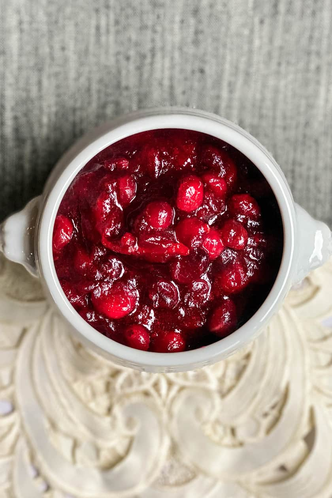

Cranberry Sauce

Description:
It's a bowl of cranberry sauce. It has cranberries in it.
Ingredients:
- 1 ½ cups cranberry juice cocktail
- 1 cup water
- 1 cup light brown sugar
- 1 cinnamon stick, broken in half
- ¼ teaspoon ground allspice
- 6 ounces dried cherries
- 1 (12 ounce) package fresh cranberries
Steps:
- Stir the cranberry juice cocktail, water, brown sugar, cinnamon stick, and allspice together in a saucepan; bring to a boil. Add the cherries to the cranberry juice mixture; cook another 2 minutes. Add the cranberries; continue cooking, stirring occasionally, until the cranberries pop, about 10 minutes. Remove from heat and chill in refrigerator 8 hours to overnight. Remove and discard cinnamon stick before serving.
- Enjoy!